Prepare
Preparation Isn't Indecision. It's How You Keep Control of the Timeline.
For advisors not ready to move but who want to reduce risk and preserve options — preparation is how advisors keep control of the timeline instead of the timeline controlling them.

Advisor Transition Journey™
Why This Journey is Different
We guide and support you to:
- ✓ Control framing
- ✓ Protect sequence
- ✓ Shape perception
- ✓ Preserve optionality
This journey ensures:
- ✓ Decisions are sound
- ✓ Moves are deliberate
- ✓ Launches have gravity
- ✓ Regret stays hypothetical
"Our role is not to push a transition. It's to ensure that if you do move, the decision is deliberate, defensible, and durable."
Preserve your options while you decide.
Preparation keeps the timeline in your hands. A confidential conversation is the fastest way to start.